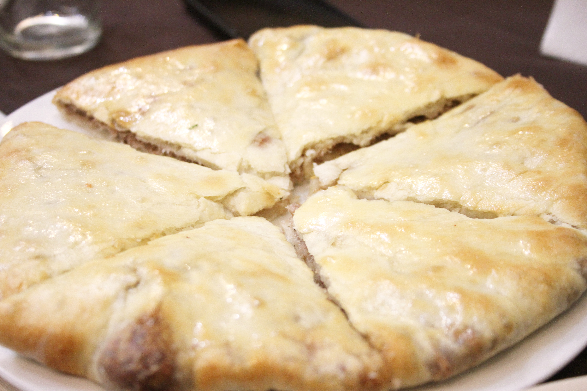

Home

Ingredients
4 Servings
- ⅓ cup warm milk (about 40°C or 102°F)
- 1 tsp of granulated sugar
- 1 tsp of active dry yeast
- 200g (1⅔ cups) of all-purpose-flour
- 1 tsp of salt
- 1 large egg
- 1 tbsp of sunflower oil
- 200g of dried red or pinto beans soaked overnight & cooked until tender
- 50g (4 tbsp) of unsalted melted butter
- ½ tsp dried savory
- ½ tsp blue fenugreek
- ¼ tsp cayenne pepper
Instructions
Dough
-
Dissolve sugar in milk and stir in yeast until combined, set aside until foamy, about 5-10 minutes. Whisk flour and salt together in a large bowl, make a well in the centre and add egg, milk and yeast mixture and oil.
Stir until combined and a shaggy dough forms.
-
Turn out onto a lightly floured surface and knead dough until smooth and slightly tacky, about five minutes,
kneading in more flour if the dough is too sticky.
-
Transfer dough into a large, clean, oiled bowl,
cover with plastic wrap or a damp towel and set aside at room temperature until nearly doubled in size,
about 1-2 hours depending on how warm the room is.
Filling
-
Drain beans and transfer to a large bowl.
With a potato masher, mash beans until smooth.
-
Add butter, savory, blue fenugreek, cayenne pepper and salt and pepper to taste.
Stir until well combined. Set aside.
Assembly
-
Preheat oven to 200°C (400°F).
Line a baking sheet with parchment paper and position a rack in centre of oven.
Lightly deflate dough and turn out onto a lightly floured surface,
roll out the dough in a circle until about 4-5 (1/4 inch) millimetres thick.
-
Place bean filling in the centre of the dough circle,
leaving about 8 centimetres (3 inches) in diameter on all sides.
Fold remaining dough over beans until the filling is completely covered by dough.
-
Roll your rolling pin the dough over the beans,
sealing it in and ensuring an even thickness of the crust.
Roll out your lobiani until it reaches about 25 centimetres in diameter.
Cut four 2.5 centimetre-long (1 inch) slits in the centre of the dough, for steam release.
-
Transfer to oven for 10-15 minutes, or until lightly browned, crisp, and cooked through.
Cut into wedges (like a pizza) and serve immediately.